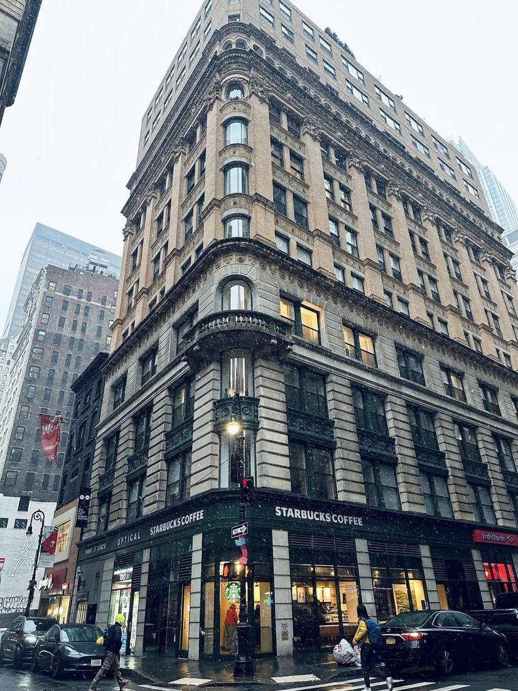
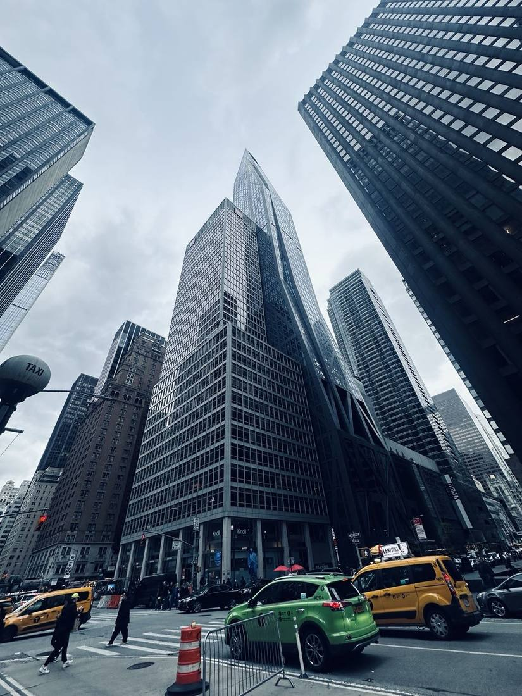
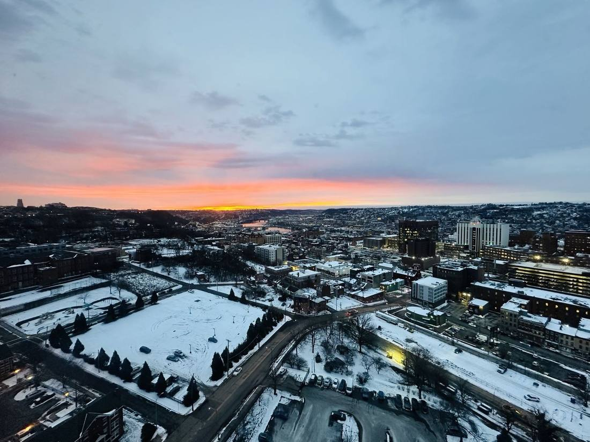
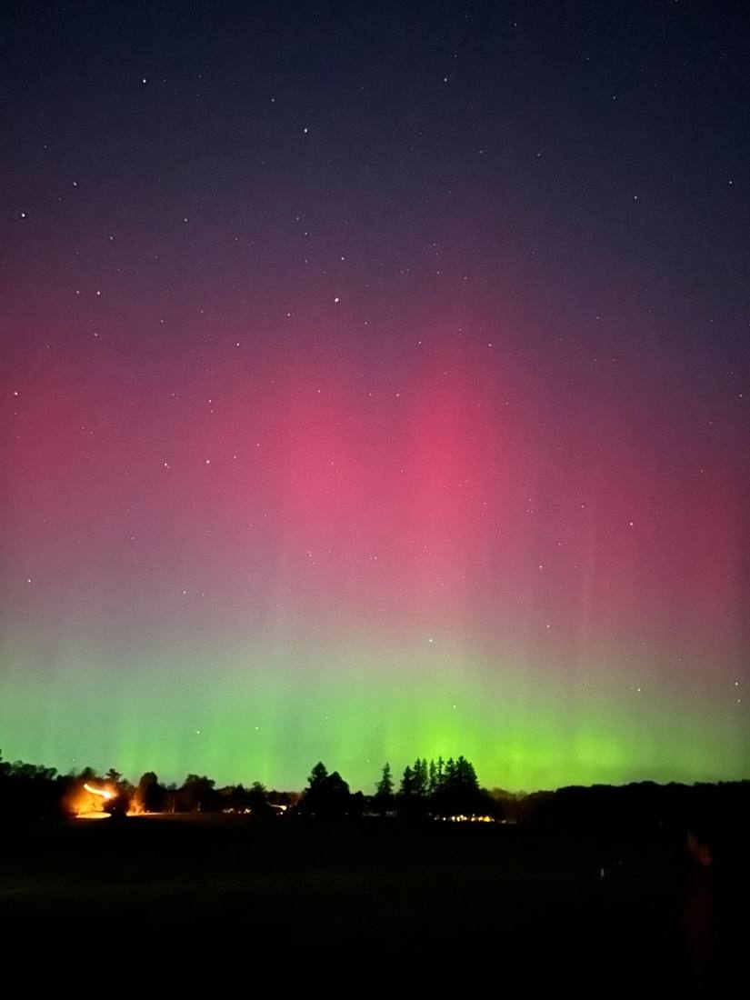
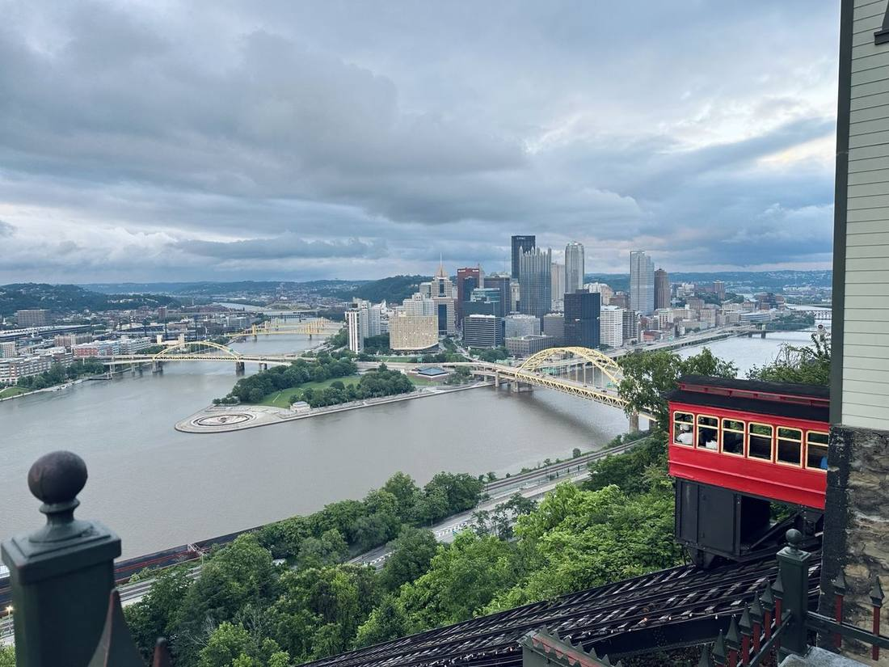
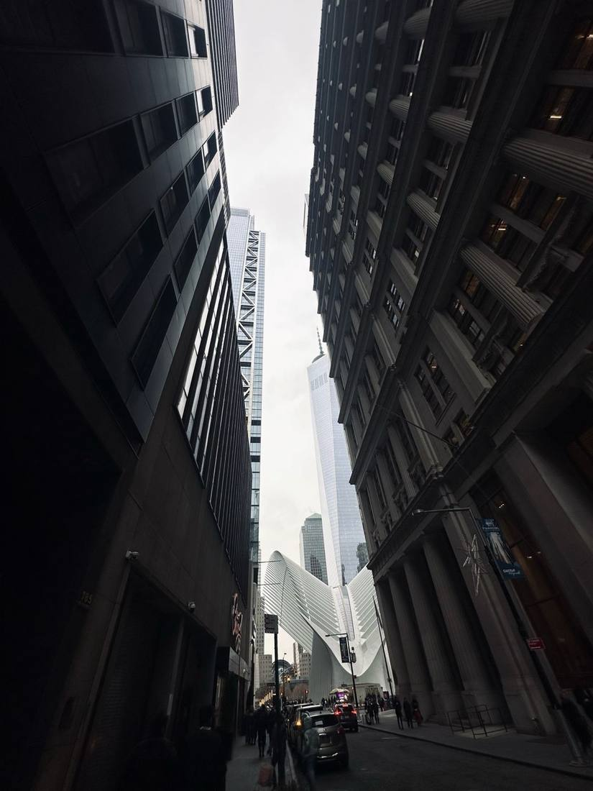
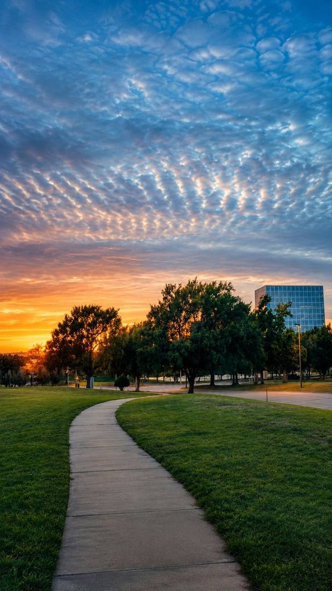
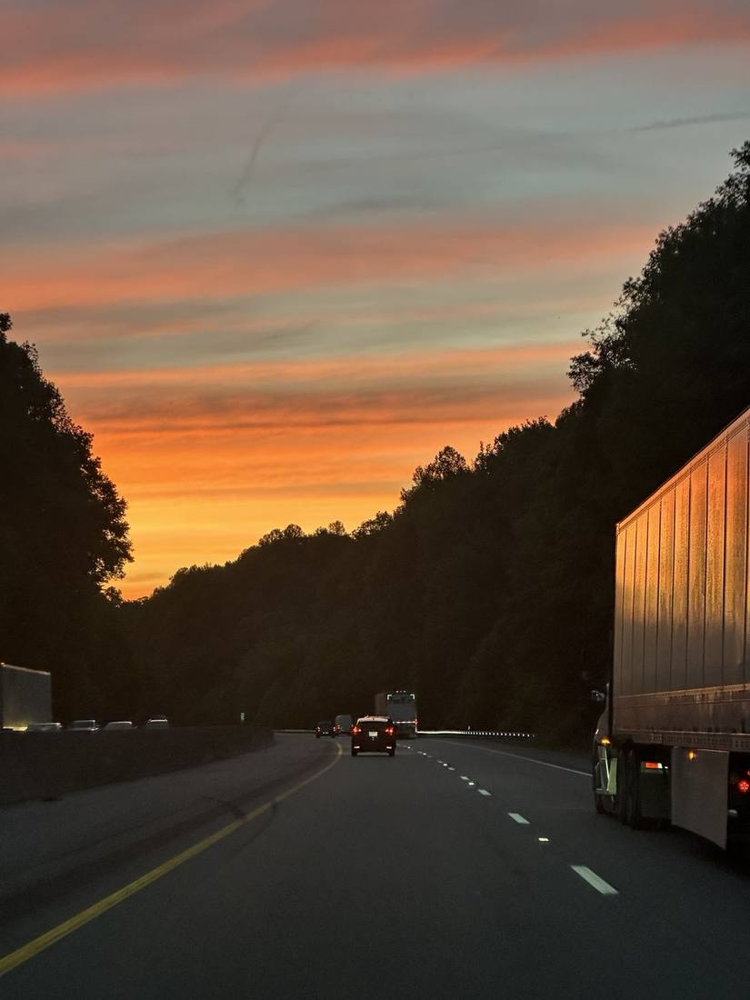

City detailsA quieter side of the portfolio: cities, light, weather and moments I wanted to remember. Less explanation. More observation.
A curated set from my camera roll — not every landmark, just the frames that made me look twice.





City details
Street scale
Leading lines
Road light“Product teaches me to notice friction. Photography teaches me to notice everything else.”
— the idea behind Through My LensSwitch from seeing places to going places.
Passport Mode →Back to ProductFlix